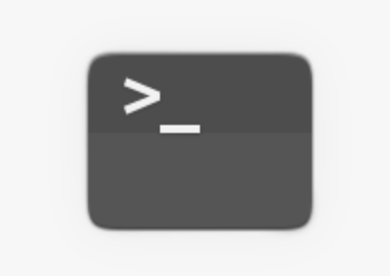

本章回顾
我们来回顾一下 😌
- 这一部分我们都讲了什么？
- 各种 gui
- qt 和 gtk 两个开源工具跨平台开发库
-
发行版和 gui 之间的关系
-
我们一起来回顾一下整个学习过程
- 我们从零开始
- 了解了一些关于 linux 基本的东西
- 一起来回顾一下～
终端
- linux 系统的基本逻辑
- 什么是内核
- 什么是发行版
-
我在哪
-
灵魂三问
- 这儿都有啥
- 灵魂之问
- 那啥在哪
- 到底哪个
- 详查手册
- 清屏
终端命令
- 命令基本
- 持续输出
- 软件包管理
- 标志
- 字符画
-
风格文字
-
动态效果
- 蒸汽机车
- 黑客帝国
- 满屏乱码
- 装酷屏幕
深入理解终端
- 深入软件
- 应用管理
- 牛说
- 管道
- 字符图
- 随机笑话
- 中文诗词
桌面命令
总结 🤨
- 我们熟悉了基本软件包的使用
- 本地的dpkg
- 远程的apt
- 安装、卸载、搜索、查看
- 了解了 gui 和 cli 的关系

- 体会到命令行才是根本！!!
- 后面讲什么呢？🤔
- 下一个系列再说！👋